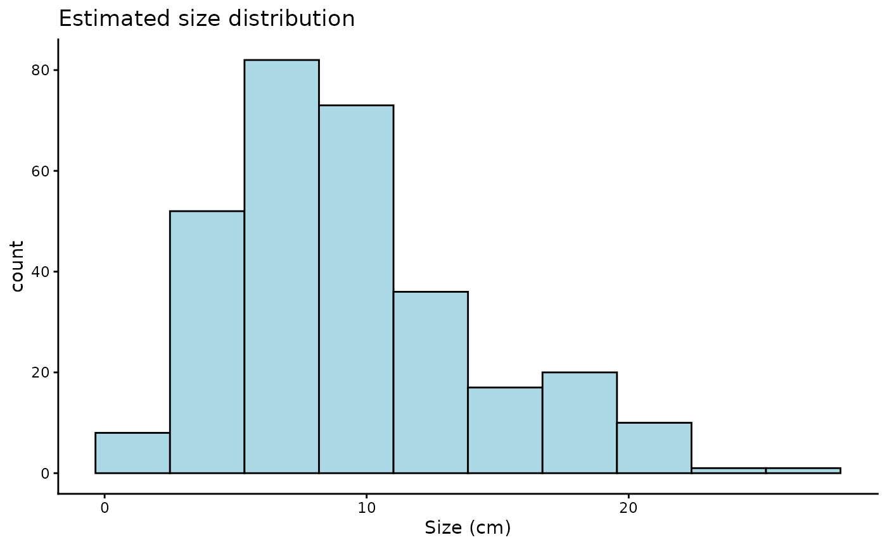
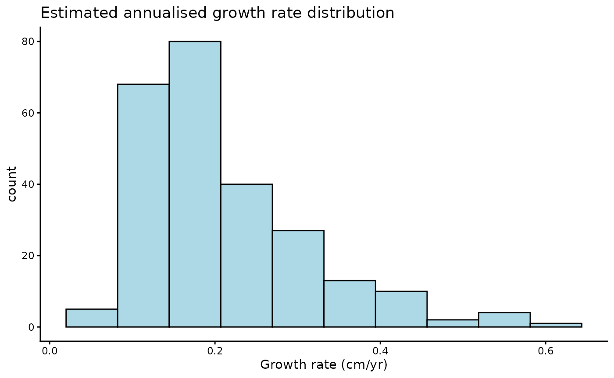
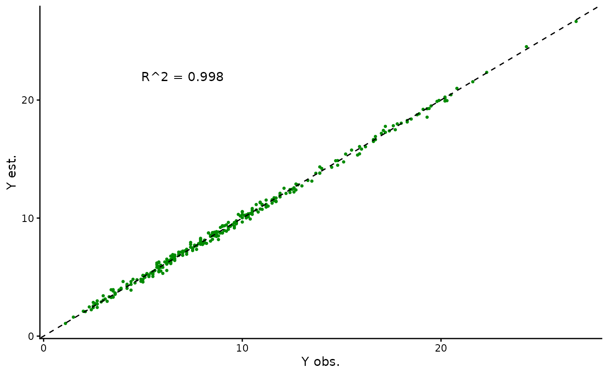
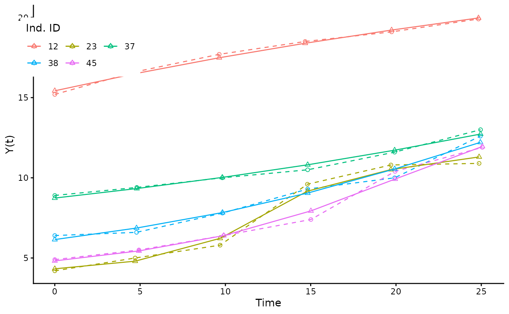
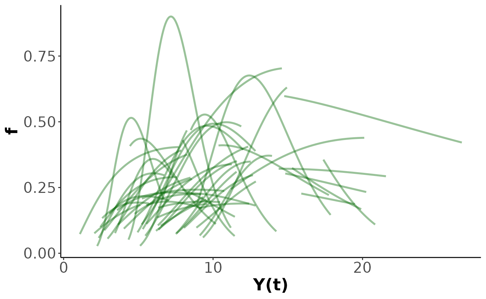

Case study 3: Canham function growth with tree data from Barro Colorado Island
canham.Rmd
library(hmde)
library(dplyr)
#>
#> Attaching package: 'dplyr'
#> The following objects are masked from 'package:stats':
#>
#> filter, lag
#> The following objects are masked from 'package:base':
#>
#> intersect, setdiff, setequal, union
library(ggplot2)Our final case study reproduces analysis from with a small sample size for G. recondita in order to make the model tractable for a demonstration.
The function we use here is based on , and is a three parameter non-linear ODE given by The Canham function, as we refer to it, describes hum-shaped growth that accelerates to a peak at then declines to 0 at a rate controlled by . The Canham function does not have an analytic solution the way that the previous function did, so we are unable to directly encode the sizes over time and must instead use a numerical method.
The Canham function has been used for a lot of growth analysis such as and as well as our own previous work in and [Paper 2]. The desirable features of the Canham growth model are that it has a period of increasing growth at small sizes, with a finite growth peak at , and then decay to near-zero growth. With different parameter combinations Canham can fit a range of growth behaviours to an observed interval: increasing growth, decreasing growth, a growth spike, or steady growth. The downside is that the Canham function is unimodal – it can only fit a single peak and as such is not suitable to describe the full life history of species that are strongly responsive to their environment as seen in [Paper 2].
The next bit of code plots the Canham function for chosen parameter values. We have provided some, but encourage playing around with the parameters and seeing what happens to the function.
g_max <- 1 #Max growth rate
S_max <- 10 #Size at which the maximum growth occurs
k <- 0.75
y_0 <- 1 #Starting size
y_final <- 40
#Plot of growth function
ggplot() +
xlim(y_0, y_final) +
labs(x = "Y(t)", y = "f", title = "Canham growth") +
theme_classic() +
theme(axis.text=element_text(size=16),
axis.title=element_text(size=18,face="bold")) +
geom_function(fun=hmde_model_des("canham_single_ind"),
args=list(pars = list(g_max, S_max, k)),
colour="green4", linewidth=1,
xlim=c(y_0, y_final))
As some exploratory analysis we’re going to look at the size and growth increment distributions.
hist(Tree_Size_Data$y_obs,
xlab = "Size (cm)", main ="")
Tree_Size_Data_Transformed <- Tree_Size_Data %>%
group_by(ind_id) %>%
mutate(Delta_y_obs = y_obs - lag(y_obs)) %>%
ungroup() %>%
arrange(ind_id, time) %>%
filter(!is.na(Delta_y_obs))
hist(Tree_Size_Data_Transformed$Delta_y_obs,
xlab = "Growth increment (cm)", main="")
Due to the complexity of the Canham model the sampling can take up to
3 hours. If you decide to run your own samples we recommend saving the
model outputs using saveRDS() so you don’t need to rerun
your model every time. As is, the following block will not run by
default as we provide a data set of estimates with the package in the
Tree_Size_Ests data file which can be accessed
directly.
tree_canham_fit <- hmde_model("canham_multi_ind") |>
hmde_assign_data(data = Tree_Size_Data) |>
hmde_run(chains = 4, cores = 4, iter = 2000)
Tree_Size_Ests <- hmde_extract_estimates(model = "canham_multi_ind",
fit = tree_canham_fit,
input_measurement_data = Tree_Size_Data)
saveRDS(tree_canham_fit, "inst/extdata/tree_canham_fit.rds")
saveRDS(Tree_Size_Ests, "inst/extdata/Tree_Size_Ests.rds")The model analysis follows the same workflow as the previous demonstrations: we look at how individual sizes over time and fitted growth functions behave, then examine evidence of relationships between parameter values at the individual level. We also look at the species-level parameter CIs and estimates.
measurement_data_transformed <- Tree_Size_Ests$measurement_data %>%
group_by(ind_id) %>%
mutate(
delta_y_obs = y_obs - lag(y_obs),
obs_interval = time - lag(time),
obs_growth_rate = delta_y_obs/obs_interval,
delta_y_est = y_hat - lag(y_hat),
est_growth_rate = delta_y_est/obs_interval
) %>%
ungroup()
#Distributions of estimated growth and size
hist(measurement_data_transformed$y_hat,
main = "Estimated size distribution",
xlab = "Size (cm)")
hist(measurement_data_transformed$delta_y_est,
main = "Estimated growth increments",
xlab = "Growth increment (cm)")
hist(measurement_data_transformed$est_growth_rate,
main = "Estimated annualised growth rate distribution",
xlab = "Growth rate (cm/yr)")
#Quantitative R^2
cor(measurement_data_transformed$y_obs, measurement_data_transformed$y_hat)^2
#> [1] 0.9984847
#Plots of size over time for a sample of 5 individuals
sample_ids <- sample(1:nrow(Tree_Size_Ests$individual_data), size=5)
plot_data <- measurement_data_transformed %>%
filter(ind_id %in% sample_ids)
ggplot(data=plot_data, aes(group = ind_id)) +
geom_point(aes(x = time, y=y_obs, colour = as.factor(ind_id)),
shape = 1) +
geom_line(aes(x = time, y=y_obs, colour = as.factor(ind_id)),
linetype = "dashed") +
geom_point(aes(x = time, y=y_hat, colour = as.factor(ind_id)),
shape = 2) +
geom_line(aes(x = time, y=y_hat, colour = as.factor(ind_id)),
linetype = "solid") +
labs(x="Time (years)", y="DBH (cm)", colour="Ind. ID") +
theme_classic()Individual parameter analysis, growth function plots follow this.
#1-dimensional parameter distributions
hist(Tree_Size_Ests$individual_data$ind_max_growth_mean,
main = "Individual max growth rate parameters",
xlab = "g_max estimate")
hist(Tree_Size_Ests$individual_data$ind_size_at_max_growth_mean,
main = "Individual size at max growth parameters",
xlab = "S_max estimate")
hist(Tree_Size_Ests$individual_data$ind_max_growth_mean,
main = "Individual spread parameters",
xlab = "k estimate")
#2-dimensional parameter distributions
ggplot(data = Tree_Size_Ests$individual_data,
aes(x = ind_max_growth_mean, y = ind_size_at_max_growth_mean)) +
geom_point(shape = 16, size = 1, colour = "green4") +
xlab("Individual max growth (cm/yr) g_max") +
ylab("Individual size at max growth (cm) S_max") +
theme_classic()
ggplot(data = Tree_Size_Ests$individual_data,
aes(x = ind_max_growth_mean, y = ind_k_mean)) +
geom_point(shape = 16, size = 1, colour = "green4") +
xlab("Individual max growth (cm/yr) g_max") +
ylab("Individual spread parameters k") +
theme_classic()
ggplot(data = Tree_Size_Ests$individual_data,
aes(x = ind_k_mean, y = ind_size_at_max_growth_mean)) +
geom_point(shape = 16, size = 1, colour = "green4") +
xlab("Individual spread parameters k") +
ylab("Individual size at max growth (cm) S_max") +
theme_classic()
#Linear correlation of parameters
cor(Tree_Size_Ests$individual_data[,c(2,6,10)])
#> ind_max_growth_mean ind_size_at_max_growth_mean
#> ind_max_growth_mean 1.0000000 0.1889271
#> ind_size_at_max_growth_mean 0.1889271 1.0000000
#> ind_k_mean -0.5245403 -0.1178273
#> ind_k_mean
#> ind_max_growth_mean -0.5245403
#> ind_size_at_max_growth_mean -0.1178273
#> ind_k_mean 1.0000000
#Plot function pieces over estimated sizes.
hmde_plot_de_pieces(model = "canham_multi_ind",
individual_data = Tree_Size_Ests$individual_data,
measurement_data = Tree_Size_Ests$measurement_data)
At the hyper-parameter level for the whole population we have centre and spread parameters for the log-normal distributions of , and .
#Max growth
Tree_Size_Ests$population_data$mean[1] #Raw value
#> [1] -1.068037
print(paste0("95% CI for mean log max growth rate: (",
Tree_Size_Ests$population_data$CI_lower[1], " , ",
Tree_Size_Ests$population_data$CI_upper[1], ")")) #Raw CI
#> [1] "95% CI for mean log max growth rate: (-1.22189025960551 , -0.913563822816852)"
exp(Tree_Size_Ests$population_data$mean[1]) #In cm units
#> [1] 0.3436826
print(paste0("95% CI for mean max growth rate in cm/yr: (",
exp(Tree_Size_Ests$population_data$CI_lower[1]), " , ",
exp(Tree_Size_Ests$population_data$CI_upper[1]), ")"))
#> [1] "95% CI for mean max growth rate in cm/yr: (0.29467263237368 , 0.40109225218227)"
#Standard deviation of underlying normal distribution
Tree_Size_Ests$population_data$mean[2]
#> [1] 0.4698056
print(paste0("95% CI for log max growth rate standard deviation: (",
Tree_Size_Ests$population_data$CI_lower[2], " , ",
Tree_Size_Ests$population_data$CI_upper[2], ")")) #Raw CI
#> [1] "95% CI for log max growth rate standard deviation: (0.359973822081078 , 0.609676368595881)"
#size at max growth
Tree_Size_Ests$population_data$mean[3] #Raw value
#> [1] 2.250392
print(paste0("95% CI for mean log size at max growth rate: (",
Tree_Size_Ests$population_data$CI_lower[3], " , ",
Tree_Size_Ests$population_data$CI_upper[3], ")")) #Raw CI
#> [1] "95% CI for mean log size at max growth rate: (2.09166408430359 , 2.41197534250353)"
exp(Tree_Size_Ests$population_data$mean[3]) #In cm units
#> [1] 9.49146
print(paste0("95% CI for mean max size at growth rate in cm: (",
exp(Tree_Size_Ests$population_data$CI_lower[3]), " , ",
exp(Tree_Size_Ests$population_data$CI_upper[3]), ")"))
#> [1] "95% CI for mean max size at growth rate in cm: (8.09838034521667 , 11.1559762682936)"
#Standard deviation of underlying normal distribution
Tree_Size_Ests$population_data$mean[4]
#> [1] 0.4544265
print(paste0("95% CI for log max size at growth rate standard deviation: (",
Tree_Size_Ests$population_data$CI_lower[4], " , ",
Tree_Size_Ests$population_data$CI_upper[4], ")")) #Raw CI
#> [1] "95% CI for log max size at growth rate standard deviation: (0.335142808828304 , 0.598383873073058)"
#Spread parameter k
Tree_Size_Ests$population_data$mean[5] #Raw value
#> [1] -0.8146044
print(paste0("95% CI for mean log spread parameter: (",
Tree_Size_Ests$population_data$CI_lower[5], " , ",
Tree_Size_Ests$population_data$CI_upper[5], ")")) #Raw CI
#> [1] "95% CI for mean log spread parameter: (-1.04979387419865 , -0.547251713144646)"
exp(Tree_Size_Ests$population_data$mean[5]) #In cm units
#> [1] 0.4428145
print(paste0("95% CI for mean spread parameter: (",
exp(Tree_Size_Ests$population_data$CI_lower[5]), " , ",
exp(Tree_Size_Ests$population_data$CI_upper[5]), ")"))
#> [1] "95% CI for mean spread parameter: (0.350009887744676 , 0.578537614832205)"
#Standard deviation of underlying normal distribution
Tree_Size_Ests$population_data$mean[6]
#> [1] 0.6247905
print(paste0("95% CI for log spread parameter standard deviation: (",
Tree_Size_Ests$population_data$CI_lower[6], " , ",
Tree_Size_Ests$population_data$CI_upper[], ")")) #Raw CI
#> [1] "95% CI for log spread parameter standard deviation: (0.440783947188584 , -0.913563822816852)"
#> [2] "95% CI for log spread parameter standard deviation: (0.440783947188584 , 0.609676368595881)"
#> [3] "95% CI for log spread parameter standard deviation: (0.440783947188584 , 2.41197534250353)"
#> [4] "95% CI for log spread parameter standard deviation: (0.440783947188584 , 0.598383873073058)"
#> [5] "95% CI for log spread parameter standard deviation: (0.440783947188584 , -0.547251713144646)"
#> [6] "95% CI for log spread parameter standard deviation: (0.440783947188584 , 0.856154441952305)"